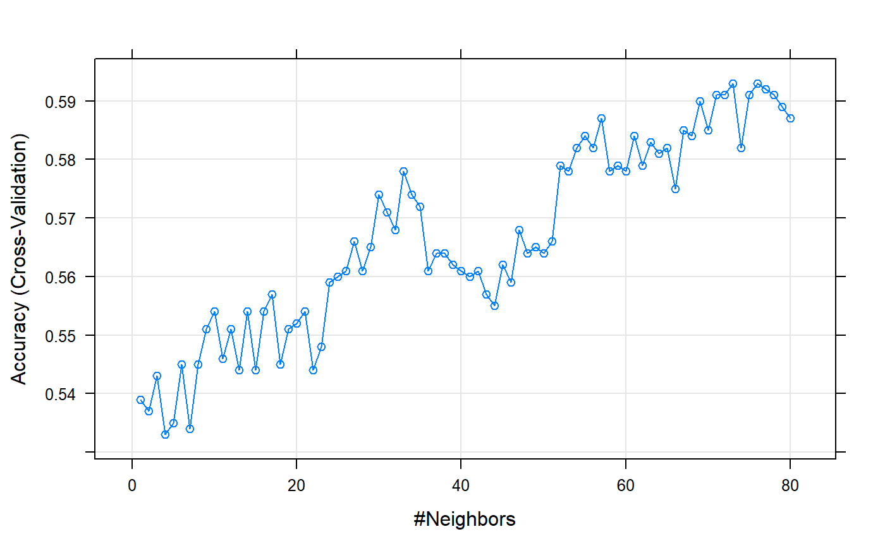

Workflow: SentiAnalyzer
workflow(1).RmdSentiment analysis for consumer review
SentiAnalyzer is a straight forward solution for analyzing consumer reviews. The consumer reviews typically include the text which customers write after visiting the place or using the service provided by a service or job owner. The consumers usually give useful information through the reviews to the manager in a way that maybe affects the future of the company. Many potential future consumers read these reviews to decide whether they use the service or not. Therefore, that is necessary to know what’s inside the review data and whether the general view toward the service provided is positive or negative. Nowadays, Machine learning algorithms can find useful patterns in data and predict new data based on learning on previous data. However, Processing the reviews data is not easy since it contains natural languages data and we need to process the data in order to be consistent with machine learning algorithms which they can work well on numeric and categorical data. The dataset that SentiAnalyzer can work with, for now, is a short review text and a binary class which indicates whether consumer review is positive or negative. First, we use natural language processing techniques (NLP) to preprocess the text of reviews to prepare them for Machine Learning (ML) algorithms. Next, the ML algorithms train on the data and build models for predicting the sentiment of new review data. We also compare the efficiency of different ML algorithms and let know the user to know which algorithm works better with her/his data. The Senti Analyzer package also provides interactive plots using Shiny apps such as high term frequency plot, word cloud of positive and negative words plot, different confusion matrix plots such as heatmap and parameter tuning plot for ML algorithms.
Overview of package functionalities
Preprocess the Text
Balancing the dataset (
BalanceData()function)Cleaning, Tokenizing and Building the term matrix of text (
CleanText()function)Visualize the clean term matrix(
VisualizeData()function)
Machine Learning
Train different classification algorithms(e.g., SVM,NB,RF,KNN,GBM) and choose best parameters for each one to get the highest possible classification accuracy for an specefic dataset (
BuildTraining()function)Choose the best trained classification algorithm for the specific dataset according to different measures (e.g., FScore, Recall, Precision, Accuracy) (
comparison()function)Predict on the new data (
BuildPrediction()function)Visualize the output of the confusion matrix, that is, the accuracy of the training model in predicting the sentiment of the consumer review
1. Tackling imbalanced data
The first step to process your data is to make sure that we have equal review rows in both positive and negative side. We check it in SentiAnalyzer package with BalanceData. This function can be used to balance the called dataset. We use package ROSE to balance data based on the class variable or dependent variable.If the data i already balanced, we just message the user that no need to balance the data and return the original dataset, otherwise the balanced dataset will return to the user.
Importing the imbalance dataset (OPTIONAL)
head(imbalance_data)
#> Review
#> 1 Crust is not good.
#> 2 Not tasty and the texture was just nasty.
#> 3 Now I am getting angry and I want my damn pho.
#> 4 Honeslty it didn't taste THAT fresh.)
#> 5 The potatoes were like rubber and you could tell they had been made up ahead of time being kept under a warmer.
#> 6 Would not go back.
#> Liked
#> 1 0
#> 2 0
#> 3 0
#> 4 0
#> 5 0
#> 6 0SentiAnalyzer::BalanceData(imbalance_data)Input the balance dataset and check how the function responds:
dim(balanced_data)
str(balanced_data)
#> [1] 1000 2
#> 'data.frame': 1000 obs. of 2 variables:
#> $ Review: chr "Wow... Loved this place." "Crust is not good." "Not tasty and the texture was just nasty." "Stopped by during the late May bank holiday off Rick Steve recommendation and loved it." ...
#> $ Liked : int 1 0 0 1 1 0 0 0 1 1 ...2. Cleaning the text
The CleanText() function is used to preprocess the text and build a term matrix which will be input to the ML algorithms later. You can see the input, output and description of this function as follows:
input: CleanText() calls for 3 arguments:
- the dataset
- document term matrix structure of choice (choose 1 from 3)
- reduction rate (range 0-1)
output: CleanText() returns a term matrix clean_dataset saved as data/clean_dataset.rda
We used packages tm and SnowballC in CleanText() to tokenize, clean the text and build the term matrix.
a. text-mining the dataset
integrating built-in functions from tm, CleanText() will “clean up” the words from the text and mine for the words that conveys a range sorts of sentiment and convert some formatting; this remains what is called as token (single) or corpus (all the tokens):
- converts all text to lower case
- remove numbers from the text
- remove punctuations
- remove stop words, e.g. “the”, “a”, “for”, “and”, etc
- extract the stems of thegiven words using Porter’s stemming algorithmn
- remove extra white spaces that was left off by the removed texts
Let go through the process step by step:
library(tm)#> [1] "wow love place"
#> [1] "crust good"
#> [1] "tasti textur just nasti"
#> [1] "stop late may bank holiday rick steve recommend love"
#> [1] "select menu great price"
#> [1] "now get angri want damn pho"b. Creating the document-term matrix
Next, still within the scope of the same current function, Cleantext(), the corpus is formatted to a document-term matrix (DTM) and creating document term matrix of words in reviews. Essentially it creates a single column for every tokens in the corpus and counted for frequency of occurence on each tokens on the rows
user also have the choice to choose either (the argument call is also done on CleanText):
- bag of words (simple counting value )
- tf-idf (term frequency-inverse document frequency)
- Bi-gram (consider two words together)
c. choosing the reduction rate
the document-term matrix will quickly expand the dataset dimension, especially the sparse terms, significantly. Depending on the dimension of the dataset can be adjusted be adjusted within the range 0 to 1. Essentially it is calling tm::removeSparseTerms
clean_dataset <- SentiAnalyzer::CleanText(balanced_data, dtm_method=1, reductionrate=0.99)example:
#> [1] 1000 97
#> [1] "also" "alway" "amaz" "atmospher" "awesom"
#> [6] "back" "bad" "best" "better" "bland"
#> [11] "buffet" "burger" "came" "can" "cant"
#> [16] "chicken" "come" "definit" "delici" "didnt"
#> [21] "disappoint" "dish" "dont" "eat" "enjoy"
#> [26] "enough" "even" "ever" "experi" "fantast"
#> [31] "feel" "first" "flavor" "food" "fresh"
#> [36] "fri" "friend" "get" "good" "got"
#> [41] "great" "ive" "just" "know" "like"
#> [46] "love" "made" "manag" "meal" "menu"
#> also alway amaz atmospher awesom back bad best better bland
#> 1 0 0 0 0 0 0 0 0 0 0
#> 2 0 0 0 0 0 0 0 0 0 0
#> 3 0 0 0 0 0 0 0 0 0 0
#> 4 0 0 0 0 0 0 0 0 0 0
#> 5 0 0 0 0 0 0 0 0 0 0
#> 6 0 0 0 0 0 0 0 0 0 0
#> also alway amaz atmospher awesom back bad best better bland
#> 995 0 0 0 0 0 0 0 0 0 0
#> 996 0 0 0 0 0 0 0 0 0 0
#> 997 0 0 0 0 0 0 0 0 0 0
#> 998 0 0 0 0 0 1 0 0 0 0
#> 999 0 0 0 0 0 0 0 0 0 0
#> 1000 0 0 0 0 0 0 0 0 0 03. Early Visualization
Before we start any further major processing of data, we can quickly get an insight of the data through a word cloud visualization. Termcount is used for filtering the highest terms repeated in reviews, usually > 10 count
check out shiny version of this function
input: a balanced dataset of text and binary sentiment review, a baseline for term count
output: wordcloud plot and frequency of words bar plot
4. Building classification training
Trains different classification algorithms using Buildtraining function and choose best parameters for each one of the available classification algorithms to get the highest possible classification accuracy for a specefic dataset. The algorithms that are being trained in the package are:
- Gradient-boosting machine (GBM)
- k-Nearest Neighbor (KNN)
- Naive Bayes (NB)
- Random Forest (RF)
- svm_Poly
Buildtraining function
(warning, this function will take a lot of time to run, so we are showing a reduced version of it)
SentiAnalyzer::BuildTraining(clean_dataset)input: document-term matrix (result from CleanText() which is clean_dataset)
output: list of trained models with best parameters from 5 machine learning algorithms (GBM, KNN, NB, RF,SVM_Poly)
Using cross validation for a valid testing accuracy
This function uses package caret, and traincontrol and whole dataset for training purpose, we use 10-fold cross validation for a valid estimate of testing accuracy.
the order of the list output of the trained models are: GBM, kNN, Naive Bayes, Decision Tree, svm_Poly. The performance of the trained models can be viewed/visualized by calling a specific model according to the index in the list; plot(), which is an embedded function from caret.
For example, to plot GBM model
Example training classifier : KNN
The model training consist of expand.grid(), train() (formula, data, method, train control, tuneGrid, etc)
Training KNN with the best parameters using caret traning function. We train the classifier KNN for k(1:80) nearest neighbors. The train function selects the best parameter with the highest accuracy,
Visualization of the KNN tranining :

As shown in plot above training explores up to 80 neighbours for KNN algorithm and selects the best one for the trained KNN model. We can see that for small values of k there is overfitting while from k=50 above it is gonna predict the majority. There needs to be a trade off between bias and variance
Another example, output from the Gradient Boosting trained model _files/figure-html/unnamed-chunk-16-1.png)
As shown it searches for tree depth and boosting iterations, for this specific dataset tree depth less than 2 and 50 boosting iteration is doing better than other settings.
5. BuildPrediction function
Classifies the target value of input data using different trained models (output of BuildTraining() function) and returns a list of confusion matrices, these matrices can be used for any purposes. Using comparison() function, we intent to extract different measurements(F,Recall, Precision,Accuracy) from it.User can also put TermVector Matrix as input and this function, depending upon the type of the input, automaticly runs BuildTraining function if needed. The goal here to have confuction matrix information as a list.
input: document-term matrix (e.g., result from CleanText() function which is cleaned_dataset) or list of trained models. Output of BuildTraining() (e.g., trained_models R object saved in package data)
output: list of various parameter values of 5 machine learning algorithms (GBM, KNN, NB, RF,SVM_Poly)
Example below uses BuilPrediction() function, with our example trained object (list of trained models trained_models). As mentioned earlier the input can also be a cleaned document-term matrix (e.g.,output of CleanText() function)
data(package = "SentiAnalyzer", trained_models)
df_predicted <- BuildPrediction(trained_models)As mentioned earlier the input can also be a cleaned document-term matrix (e.g.,output of CleanText() function which is cleaned_dataset) :
BuildPrediction(cleaned_dataset)6. Comparison function; Comparison of ML training models
This function extracts F1, Recall,Precision and Accuracy from confusion matrices list and returns a dataframe of those measurments.
input: depending upon the type of the input, function runs appropriate needed functions. Input can be a document-term matrix (e.g., result from CleanText() function which is cleaned_dataset) or a list (e.g., output of BuildPrediction() function)
output: list of confusion matrices of 5 machine learning algorithms Input can be
Example below uses comparison() function, with our example confusion matrices list R object (list of confusion matrices df_predicted).
comparison(df_predicted)As mentioned earlier the input can also be a cleaned document-term matrix (e.g.,output of CleanText() function which is cleaned_dataset) :
comparison(cleaned_dataset)Example confusion matrices for different algorithm for our example dataset cleaned_dataset :
data(package = "SentiAnalyzer", trained_models)
df_predicted <- SentiAnalyzer::BuildPrediction(trained_models)
Cmx <- SentiAnalyzer::comparison(df_predicted)
Cmx
#> Accuracy Precision Recall F1 Method
#> 1 0.615 0.5755585 0.876 0.6946868 gbm
#> 2 0.634 0.6009036 0.798 0.6855670 KNN
#> 3 0.537 0.8936170 0.084 0.1535649 NB
#> 4 0.619 0.5765766 0.896 0.7016445 RandomForest
#> 5 0.612 0.5825959 0.790 0.6706282 SVMAs shown for this dataset, based on table above KNN is doing better than others with respect to accuracy and RandomForest is doing better in terms of F1 measure. As we can see, just referring to one measurement for summerizing the confusion matrix is not suitable. Selecting the best method can not be just based upon accuracy of classification.
Next steps
what now? How about we visualize these numbers to aid our interpretation of comparing the parameters?
For a more interactive version of the functions, access our Shiny apps
Here is an example of plotly heat map and table of the confusion matrices
input: confusion matrix from Comparison
output: interactive plotly heat map and table